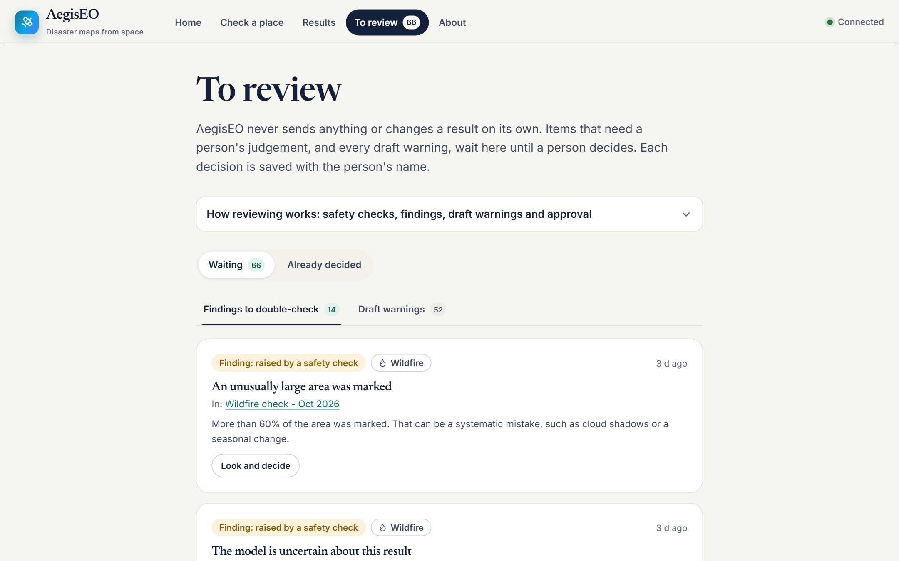

Viva questions and answers
112 questions about the AegisEO project, ordered from basic to challenging, each with a model answer and, where examiners are likely to probe further, a follow-up question with its answer.

Basis of the answers: the AegisEO repository as inspected and improved on 8 November 2026 (base commit b5b60a9 plus the changes of that round), its trained-model files, its database of completed checks, and tests run on that date. The answers describe the same implementation as the project documentation and the presentation.
Companion files in the same folder: AegisEO_Project_Documentation.pdf (full explanation, with chapter references used below) and AegisEO_Presentation.pptx.